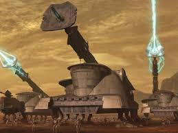

Ground Vehicles
-
AT-TE (All Terrain Tactical Enforcer) — A six-legged walker used for troop transport and heavy fire support.
-
TX-130 Saber-class Tank Destroyer — A heavily armored tank designed to destroy enemy fortifications.
-
Juggernaut — Massive, heavily armored transport vehicle for large-scale troop deployment.
-
SPHA (Self-Propelled Heavy Artillery) — Mobile artillery platform for long-range bombardment.

-
UT-AT (All Terrain Utility Transport) — Versatile troop carrier with moderate firepower.
-
AT-RT (All Terrain Recon Transport) — Small, fast scout walker used for reconnaissance missions.